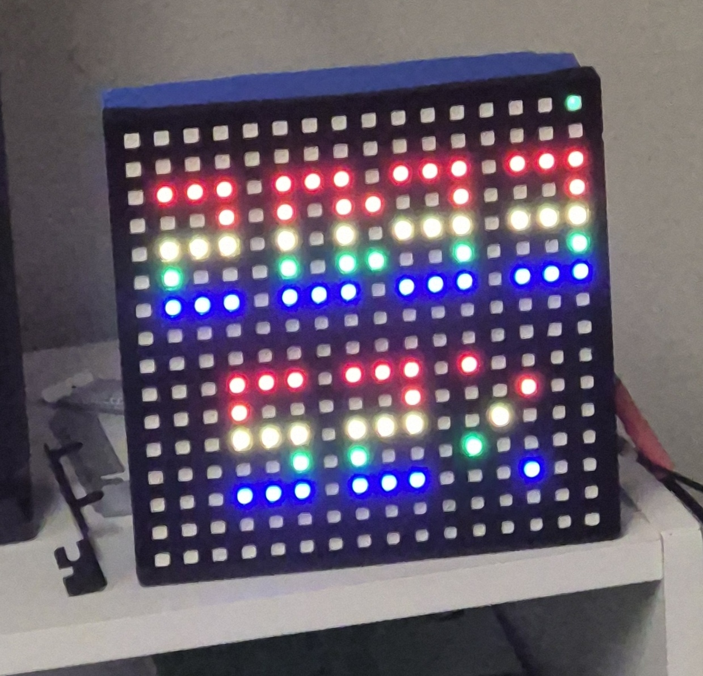
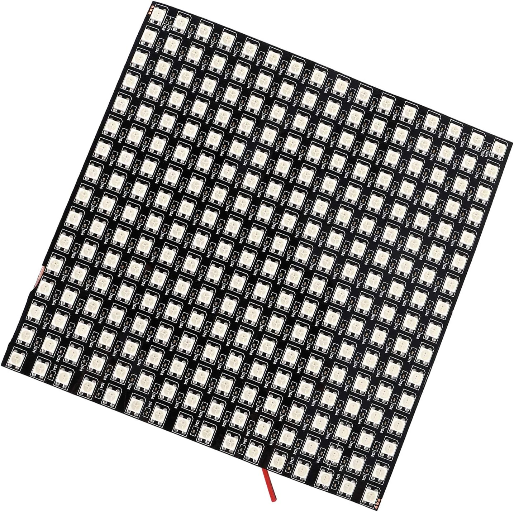
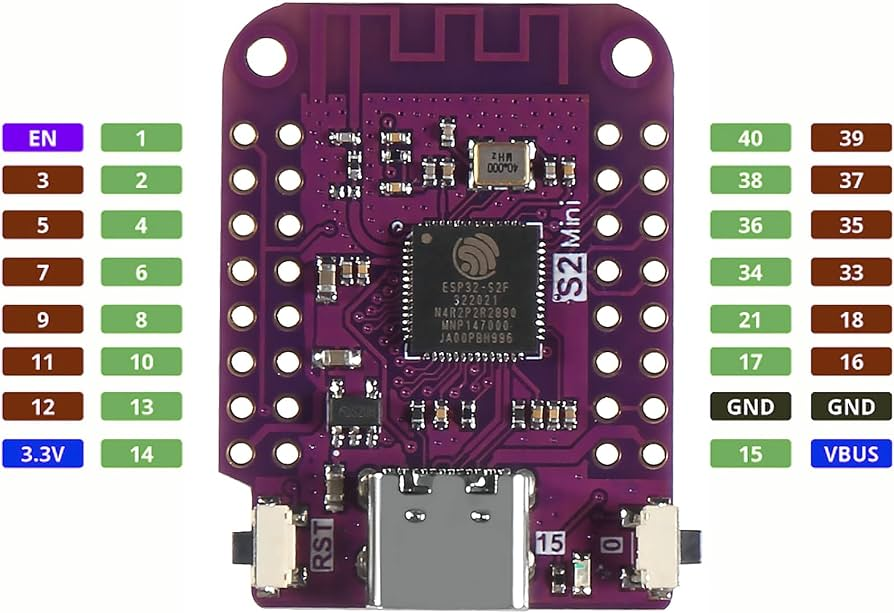
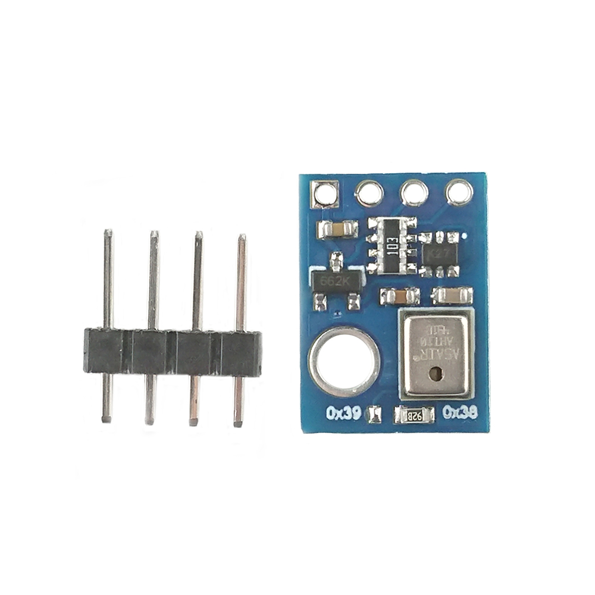
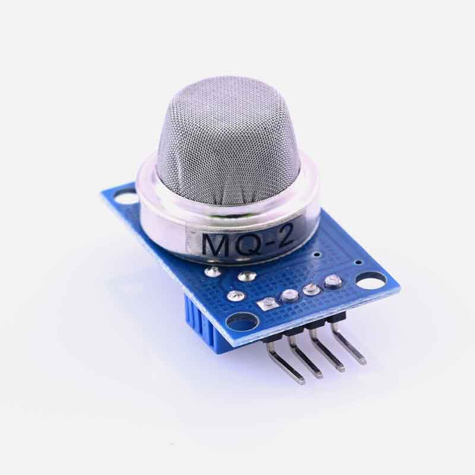
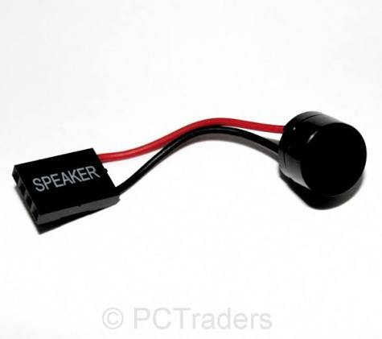
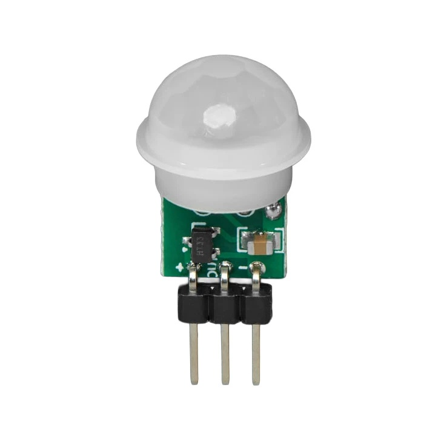

16x16 5050 WiFi Clock
A feature-packed, customizable LED matrix clock with web configuration.

Features
- Router-like interface for easy setup
- Gets time automatically from WiFi
- SMS alerts (requires SMS account)
Optional components enable:
- Temperature & Humidity monitoring
- Smoke detection
- Customizable alarms
- Light detection
- Motion detection (can be added manually)
3D Print Parts
You will need to print both the lid and the case.
 Case STL
Case STL
 Lid STL
Lid STL
Supplies:
- A soldering iron may be needed to install pins on some of the boards.
- Soldering wires directly provides a much more secure and reliable connection than temporary jumper wires.
Parts Gallery

16x16 LED
ESP32-S2-Mini
AT10 Sensor Jumper Wires
Jumper Wires
Optional Parts:

MQ2 Smoke
PC Piezo
PIR MotionAssembly & Setup Guide
Step 1: Collect Parts
Tip: Try eBay or AliExpress
- ESP32-S2-Mini (recommended with pre-soldered pins)
- 16x16 5050 WS2812B LED grid
- USB-C cable (to program the ESP)
- USB cable (cut the end off for power supply)
- Wires or jumpers
- Soldering equipment (iron, solder, and flux)
Optional parts:
- AHT10 (temperature/humidity sensor)
- MQ2 (smoke sensor)
- LDR/resistor (light sensor)
- Piezo (alarm)
Step 2: Print the Case
Print out your case (`wificlock7case.stl`) and lid (`wificlock7lid.stl`) using your 3D printer.
Step 3: Flash the Microcontroller
Upload the firmware code to your microcontroller.
Arduino Code:
// Insert your Arduino code hereHTML Web Interface Code:
<!-- Insert your HTML web interface code here -->Step 4: Assemble Electronics & Wiring
Check wiring carefully so as not to release the magic smoke! (Yes, check at least twice, unless you bought spares)
Plug in, boot up, and perform your initial device setup/testing.
Wiring & Assembly Photos:
 Power Hookup
Power Hookup
 Matrix Data Pin
Matrix Data Pin
Step 5: Final Assembly
Carefully place everything inside the printed case. Enjoy your new device!
Praise me {like, comment, donate}
Step 6: Research & Upgrade
Expand your project by adding a motion detector, or write custom code to fetch live API weather data like rain (r99%), clouds (C99%), aurora (KPx), or geomagnetic (Gx) indexes. So many possibilities!